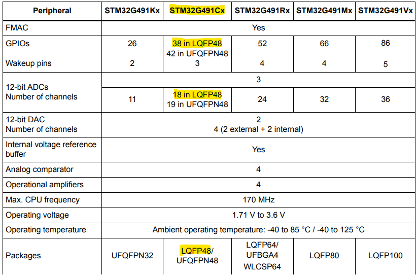
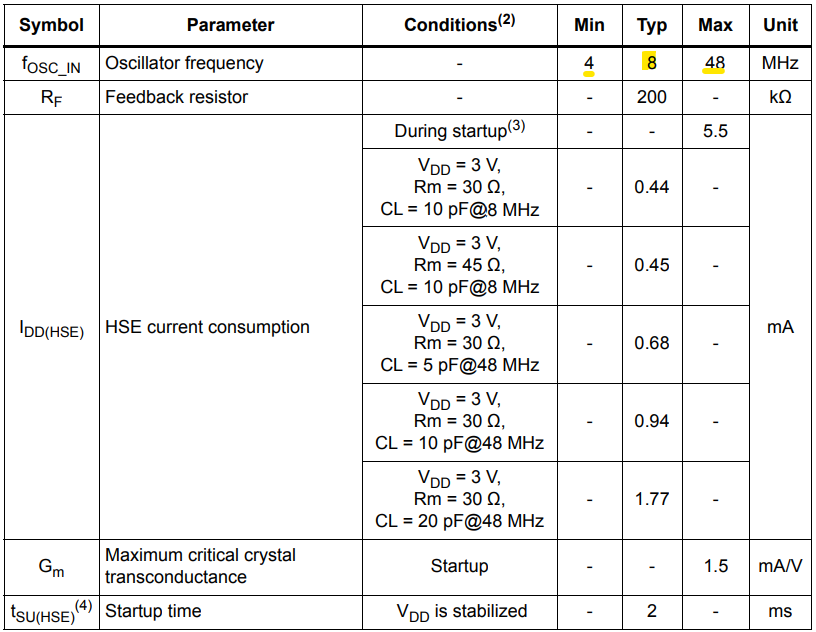

DANIELE VILLA - GABRIEL BILLECI - GIOVANNI BRIGNOLI (01/10/26)
Per la scheda sensori si pensava di svilupparla nell'ottica di alleggerire la mole di lavoro della centralina. Questa scheda dovrà prendere il controllo degli attuali sensori della pedaliera e dovrà essere in grado di tirare fuori i dati puliti ed eventualmente svolgere dei calcoli sui dati acquisiti.
DANIELE VILLA - GABRIEL BILLECI - GIOVANNI BRIGNOLI (08/10/26)
Dopo aver confrontato le diverse soluzioni disponibili, la scelta ricade sullo STM32G491CCU6 a 48 pin per la scheda. Datasheet STM32G491CCU6
La decisione è stata presa considerando non solo i requisiti attuali del progetto, ma anche le possibili evoluzioni future del sistema. A parità di architettura e prestazioni di calcolo, l'STM32G491 offre infatti 256 kB di Flash e 112 kB di SRAM, garantendo un margine significativamente superiore rispetto allo STM32G431. Questa maggiore disponibilità di memoria permette di implementare con tranquillità funzionalità aggiuntive, algoritmi di elaborazione più complessi, filtri digitali, strategie di diagnostica e logging avanzato senza il rischio di saturare rapidamente le risorse del microcontrollore.
La scelta del package 48 pin è stata preferita rispetto alla versione da 32 pin principalmente per la maggiore disponibilità di periferiche e di ingressi analogici.
Dal punto di vista delle prestazioni computazionali, il core Cortex-M4 a 170 MHz con FPU e la presenza del CAN-FD integrato rendono il dispositivo pienamente adeguato alle esigenze di acquisizione, elaborazione e trasmissione dati richieste dall'applicazione Formula Student. La notevole disponibilità di RAM permette inoltre di gestire con maggiore semplicità buffer di acquisizione, filtri software e future elaborazioni in tempo reale.
DANIELE VILLA - GABRIEL BILLECI - GIOVANNI BRIGNOLI (08/10/26)
Al momento i sensori che si volevano aggiungere erano: - GPS: servirebbe! l'obiettivo è capire dove si trova l'auto all'interno della pista, anche un sistema a "checkpoint" va bene - Sensori di altezza da terra (laser/ottici), idealmente montati in più punti del fondo - Sensori di spostamento per ammortizzatori - Sensori di carico per bracci sospensioni - Sensore angolo di sterzo - Sensore di pressione freni (output in bar!!) - Sensore di posizione acceleratore - Sensore velocità ruote - Sensori di temperatura e pressione pneumatici (TPMS) - Sensore per rilevare temperatura battistrada pneumatico (interno, centro, interno) - (stazioni per temperatura umidità e pressione aria, pressure taps: assenti o da implementare)

Il micro che abbiamo scelto ci dà la possibilità di avere 18 ingressi analogici sulla scheda. Saranno da valutare assieme ai vari reparti quali sensori avrà senso implementare già quest'anno e quali no. Catalogo sensori Nope Engineering
DANIELE VILLA - GABRIEL BILLECI - GIOVANNI BRIGNOLI (10/10/26)
Esempio di una scheda Nucleo64 STM32G4 che aiuta per lo sviluppo della scheda sensori Download datasheet
DANIELE VILLA - GABRIEL BILLECI - GIOVANNI BRIGNOLI (11/10/26)
Per la scheda sensori si valuta la scelta di un oscillatore esterno per avere una maggiore precisione anche per il trascriver della linea can. Dal datascheet del microcontrollore la frequenza typical dell'oscillatore è di 8MHz.

L'idea è quella di utilizzare un oscillatore che abbiamo già su una delle schede che si stanno usando attualmente in auto. Dunque si valuterà se utilizzare l'oscillatore di Emma, che anch'esso è a 8MHz.
DANIELE VILLA - GIOVANNI BRIGNOLI (20/10/26)
Parlando con il reparto aereodinamica è emersa l'esigenza di avere delle misure riguardanti la portata di aria in ingresso ed in uscita dalla zona dei radiatori per eseguire un corretto dimensionamento dei medesimi. Per eseguire ciò uno dei metodi potrebbe essere l'impiego di due tubi di pitot. Dato che al momento non è confermata come soluzione, la proposta è quella di implementare solamente sulla pcb la predisposizione.
Dal lato meccanico invece ci è richiesto di montare il maggior numero di sensori presenti nella lista. Dunque lo sviluppo andrà verso uno sviluppo di una serie di predisposizioni sulla pcb della scheda.
L'obbiettivo attuale è ottenere una scheda sufficientemente versatile da poter permettere, in un futuro, di poterla ancora utilizzare anche qual ora venisse sostituita da una scheda sensori più specializzata ed elaborata.